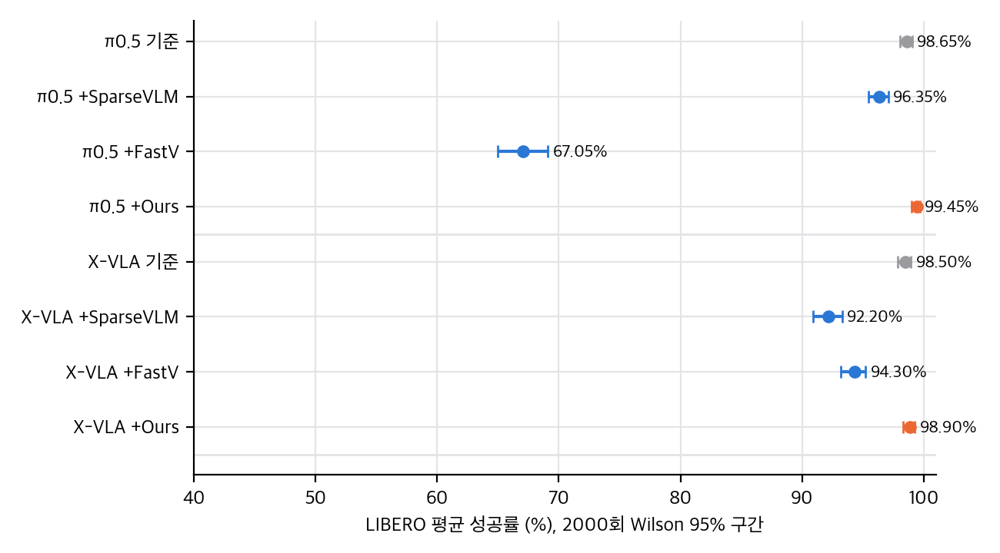
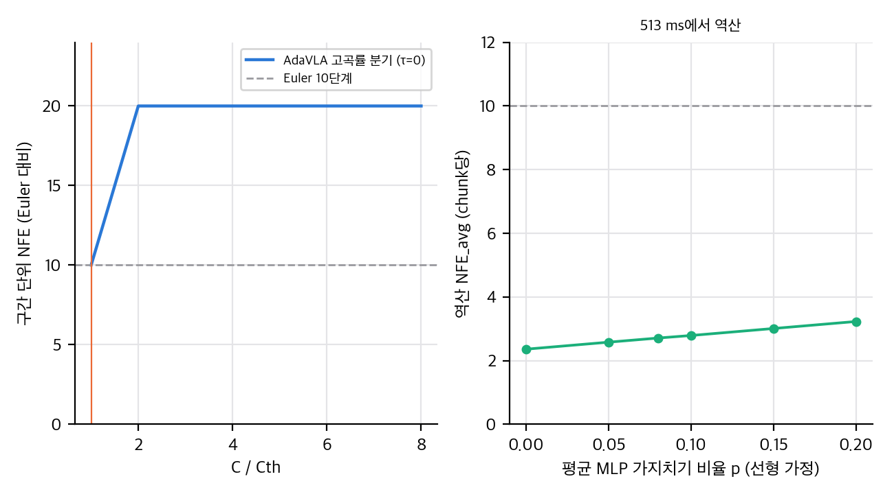
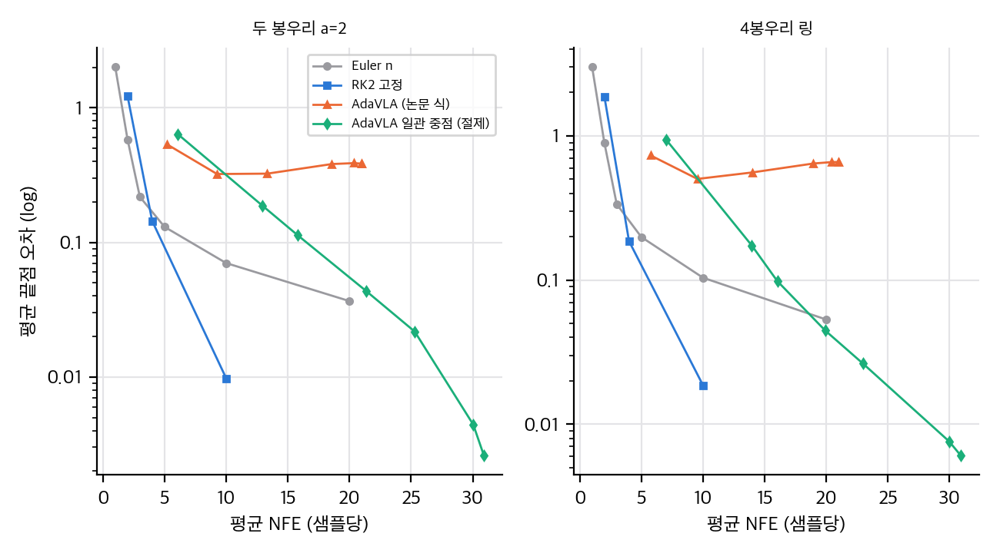
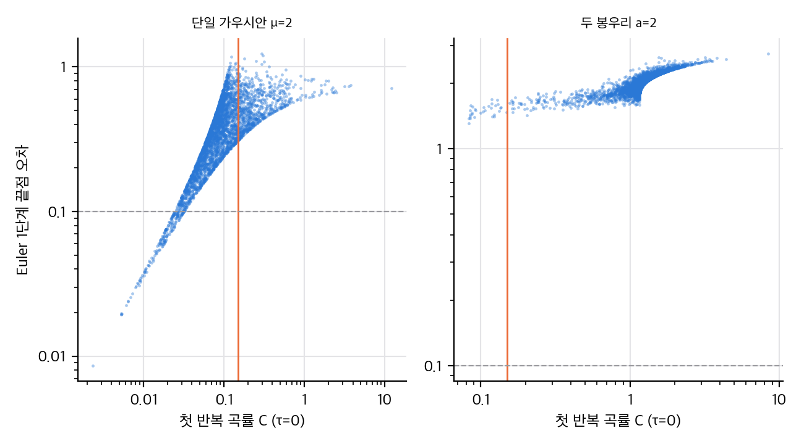

paper/paper.pdf(8쪽, 2.4 MB), 추출 텍스트 paper/paper.txt. 식·표 번호는 논문 기준입니다.04 대신 이 문서 말미 §6과 README.md에 요약합니다. v1 → v2는 본문 숫자와 표가 같고, 감사의 글(IITP 과제 번호 추가)과 문단 위치만 바뀌었습니다.03 §4).03 §3).lerobot/pi05_libero_finetuned, lerobot/xvla-libero)입니다.| 기반 모델 | 방법 | 평균 SR (%) | 지연 Orin (ms) | 에너지 Orin (J) |
|---|---|---|---|---|
| π0.5 | 기준 | 98.65 | 958.54 | 19.83 |
| π0.5 | +SparseVLM | 96.35 | 945.09 | 17.35 |
| π0.5 | +FastV | 67.05 | 863.84 | 17.38 |
| π0.5 | +Ours | 99.45 | 513.35 | 13.17 |
| X-VLA | 기준 | 98.50 | 387.52 | 10.73 |
| X-VLA | +Ours | 98.90 | 173.09 | 3.51 |
| 변형 | Cth | SR (%) | 지연 (ms) |
|---|---|---|---|
| 기준 10단계 | - | 98.65 | 958.54 |
| Ours (+PR, +Adp) | 0.15 | 99.45 | 513.35 |
| +SVD, +Adp | 0.15 | 99.65 | 894.78 |
| +Fxd, +Adp | 0.15 | 99.35 | 492.00 |
| −Pruning, +Adp | 0.15 | 98.65 | 532.32 |
| +PR, −Adp | 0.15 | 99.25 | 925.71 |
| +PR, +Adp | 0.20 | 99.20 | 428.24 |
| +PR, +Adp | 0.25 | 98.40 | 413.26 |
| 1-step | - | 97.05 | 447.45 |
| 5-step | - | 98.00 | 677.56 |
| 무작위 1–10 step | - | 98.65 | 694.13 |
04 §2에 정리): 최대 반복 수, ε, p_l 초기값과 허용 범위, 유지할 채널 비율, 재정렬 발동 조건, 정밀도(fp16/bf16 등), 프레임워크(PyTorch/JAX), 워밍업 처리, 기준 방법의 하이퍼파라미터, 코드.곡률로 "지금 한 번에 끝낼지"를 정하는 아이디어는 간단하고 학습이 필요 없어서 매력적입니다. 하지만 논문에서 지연 이득을 실제로 만드는 것은 식 9의 갱신과 낮은 곡률 점프가 만든 평균 NFE 2–3이고(03 §5), 그 NFE를 맞춘 정적 기준선이 없어 "적응이 정적 감소보다 낫다"는 주장은 검증되지 않았습니다.
arXiv:2608.29208v1 [cs.RO] 29 Aug 2026 → v2 … 11 Sep 2026.RS-2025-02263167만 "partially supported"로 적음. v2는 RS2025-02263167과 IITP-RS-2026-25547954(인공지능 혁신 인재 양성 사업) 두 과제를 "supported"로 적음..scratch/v1_raw.txt, .scratch/v2_raw.txt)에서 diff -w가 위의 세 곳만 보고했습니다.paper/에 두지 않았고 .scratch/paper_v1.pdf에만 받아 비교했습니다.모든 수치는 analysis/table_check.py(→ table_check_results.json), analysis/pr_check.py(→ pr_check_results.json), analysis/flow_toy.py(→ flow_toy_results.json)의 출력입니다. CPU, numpy 1스레드.

직접 계산: LIBERO 평균 성공률과 Wilson 95% 구간 (2000회).
| 구성 | 성공 | 성공률 (%) | Wilson 95% (%) |
|---|---|---|---|
| π0.5 기준 | 1973 | 98.65 | [98.04, 99.07] |
| π0.5 +Ours | 1989 | 99.45 | [99.02, 99.69] |
| X-VLA 기준 | 1970 | 98.50 | [97.87, 98.95] |
| X-VLA +Ours | 1978 | 98.90 | [98.34, 99.27] |
| 비교 (Ours, PR, Adp 0.15 대) | 차이 (pp) | Fisher p | Holm p |
|---|---|---|---|
| 기준 10단계 | +0.80 | 0.013 | 0.080 |
| 1단계 | +2.40 | 3×10⁻⁹ | 3×10⁻⁸ |
| 5단계 | +1.45 | 5×10⁻⁵ | 4×10⁻⁴ |
| 무작위 1–10단계 | +0.80 | 0.013 | 0.080 |
| +Fxd, +Adp | +0.10 | 0.84 | 1.0 |
| +SVD, +Adp | −0.20 | 0.48 | 1.0 |
| −Pruning, +Adp | +0.80 | 0.013 | 0.080 |
| +PR, −Adp | +0.20 | 0.56 | 1.0 |
| 항목 | 계산 | 값 (ms) | 보고값 | 차이 |
|---|---|---|---|---|
| VLM (입력+순방향) | 96.25 + 290.28 | 386.53 | 386.53 (본문) | 0 |
| 행동 전문가 10단계 | 10 × 53.75 | 537.50 | 557.78 | +20.28 |
| 구성요소 합 | 386.53 + 557.78 | 944.31 | 953.62 (end-to-end) | −9.31 |
| 기준 10단계 예측 | 386.53 + 10 × 53.75 | 924.03 | 958.54 (Table II) | +34.51 |
| 기준 1단계 예측 | 386.53 + 53.75 | 440.28 | 447.45 (Table III) | +7.17 |
| 기준 5단계 예측 | 386.53 + 5 × 53.75 | 655.28 | 677.56 (Table III) | +22.28 |
| 18층 합 검산 | 18 × (3.05 + 12.47) | 279.36 | 290.28 | +10.92 |
pr_check.py)τ에서의 속도를 v(τ), 중점 τ_m = τ + h, h = (1−τ)/2라고 하면 v(τ_m) − v(τ) ≈ v′(τ)·h이므로
C ≈ ‖v′(τ)‖ · (1−τ) / (2 ‖v(τ_m)‖)
입니다. 따라서 (i) 속도의 시간 변화율 ‖v′‖/‖v‖에 비례하고, (ii) (1−τ)에 비례합니다. 즉 같은 곡률이라도 τ가 클수록 C가 작아집니다. 이 항목은 논문이 말하는 "곡률"과 다릅니다. 논문은 τ 의존성을 설명하지 않습니다.
따라서 "RK2"라는 이름은 ŝ = (1−τ)/2인 특별한 경우에만 맞습니다.
논문은 "행동 차원이 작아서 궤적이 거의 직선이다"라고 가정합니다(Sec. IV-A, 가설). toy에서는 이 가정이 실패할 수 있음을 봅니다. 주변 속도는 조건부 경로가 모두 직선이어도 봉우리 사이의 결정 때문에 곡선이 됩니다. 봉우리가 둘 이상인 목표에서 곡률은 결정 경계 근처에서만 큽니다. 그래서 다봉 분포에서는 "직선 → 확신"이라는 연결이 약합니다. 아래 §6.3이 이를 봅니다.

직접 계산: 식 8의 구간당 NFE(왼쪽)와 513 ms에서 역산한 평균 NFE(오른쪽).
가정: 지연 = (386.53 − 233.4·p) + NFE_avg × 53.75 ms. 여기서 233.4 = (12.47/(12.47+3.05)) × 290.28 × p 이고, p는 VLM MLP의 평균 가지치기 비율입니다. 선형 가정이고, 입력 처리(96.25 ms)는 가지치기의 영향을 받지 않는다고 봅니다.
| 구성 | 지연 (ms) | 역산 NFE_avg |
|---|---|---|
| −Pruning, +Adp (p=0) | 532.32 | 2.71 |
| Ours (p = 0) | 513.35 | 2.36 |
| Ours (p = 0.05) | 513.35 | 2.58 |
| Ours (p = 0.08) | 513.35 | 2.71 |
| Ours (p = 0.10) | 513.35 | 2.79 |
| Ours (p = 0.15) | 513.35 | 3.01 |
| Ours (p = 0.20) | 513.35 | 3.23 |
flow_toy.py)설정: 2차원 가우시안 혼합 목표와 선형 경로, 정확한 주변 속도(식은 스크립트 상단). 출발 샘플 4000개, seed 0. 기준 끝점은 RK4 2000단계. 허용 오차 0.1(절대값). 최대 10 반복. 속도 공식은 몬테카를로 커널 추정(400k 표본, 대역폭 0.1)과 비교해 최대 차이 0.063입니다. 커널 편향이 섞인 대략적 확인입니다.

직접 계산(toy): 평균 NFE 대 평균 끝점 오차. Euler, 고정 RK2, 논문 식, 일관 중점 변형.
| 목표 | Euler 1 | Euler 5 | Euler 10 | RK2 1 | 논문 식 (NFE, 오차) | 일관 중점 (NFE, 오차) | ρ(C₁, Euler1 오차) |
|---|---|---|---|---|---|---|---|
| A 단일 μ=2 | 0.379 | 0.126 | 0.067 | 0.170 | 5.5, 0.193 | 7.0, 0.124 | 0.81 |
| B a=1 | 1.024 | 0.125 | 0.065 | 0.401 | 20.1, 0.344 | 28.5, 0.023 | 0.64 |
| B a=2 | 2.014 | 0.130 | 0.070 | 1.220 | 18.6, 0.382 | 21.3, 0.044 | 0.90 |
| B a=4 | 4.009 | 0.163 | 0.089 | 3.049 | 7.5, 0.252 | 11.3, 0.118 | 0.98 |
| C 링 4봉우리 | 3.016 | 0.199 | 0.104 | 1.869 | 18.9, 0.644 | 19.9, 0.045 | 0.84 |
(오차는 평균 끝점 오차, 모든 값은 flow_toy_results.json에 있습니다.)
report/figures/toy_pareto.png)에서 논문 식 곡선은 Euler와 고정 RK2 곡선보다 위쪽에 있습니다. 같은 NFE에서 오차가 더 큽니다.| Cth | NFE | 오차 | 소진 비율 | 낮은 곡률 반복 시작 비율 |
|---|---|---|---|---|
| 0.01 | 20.99 | 0.385 | 0.999 | 0.001 |
| 0.15 | 18.57 | 0.382 | 0.666 | 0.334 |
| 0.50 | 9.26 | 0.322 | 0.016 | 0.984 |
| 1.00 | 5.21 | 0.534 | 0.000 | 1.000 |

직접 계산(toy): 첫 반복 곡률 C와 Euler 1단계 오차. 세로선은 Cth = 0.15, 점선은 오차 0.1.
lowC_highErr_frac_of_low = 1.0). 예: a=4에서 C₁ = 0.1125인 샘플은 Euler 1단계 오차 3.53이고 참 끝점은 먼 봉우리(3.49, −0.56)입니다. 곡률이 작아 보이는데 결정은 이미 틀린 쪽으로 기울어 있습니다. 첫 반복에서 측정한 곡률은 결정 경계 근처의 결정을 보지 못합니다.| c | 첫 반복 낮은 곡률 비율 | 임의 반복에서 점프 비율 | NFE | 오차 | 첫 반복 C 중앙값 |
|---|---|---|---|---|---|
| 0.1 | 1.000 | 1.000 | 2.0 | 0.138 | 0.060 |
| 1.0 | 0.008 | 0.334 | 18.6 | 0.382 | 1.208 |
| 10.0 | 0.000 | 1.000 | 4.5 | 1.385 | 1.111 |
구간 단위 NFE = 2/ŝ, ŝ = min((1−τ)/2, max(s, 2s·Cth/C)).
| C/Cth | ŝ (τ=0, s=0.1) | 구간당 NFE | Euler 대비 |
|---|---|---|---|
| 1.0 | 0.200 | 10.0 | 1.0배 |
| 1.5 | 0.133 | 15.0 | 1.5배 |
| 2.0 | 0.100 | 20.0 | 2.0배 |
| 4.0, 8.0 | 0.100 | 20.0 | 2.0배 |
paper/paper.pdf.gh search 무관). 그래서 논문 ↔ 코드 대조(D 항목) 대신 다음을 했습니다.
analysis/table_check.py(03 §1–2, §5)analysis/pr_check.py(03 §3)analysis/flow_toy.py(03 §4, §6)02 §4): 접두사 KV 한 번, 행동 전문가 10회 Euler 확인| # | 주장 (출처) | 재계산·점검 | 판정 |
|---|---|---|---|
| C1 | π0.5 1.87배, X-VLA 2.24배 지연 감소 (Abstract, Sec. V-B, Table II) | 958.54/513.35 = 1.867, 387.52/173.09 = 2.239. 평균 지연의 측정 방식(10 rollout 평균, 워밍업·정밀도 미기재)은 확인 불가 | ✅ 산술 / ⚠️ 측정 조건 미기재 |
| C2 | π0.5 성공률 "negligible degradation"(Abstract) | 98.65 → 99.45%, Fisher p = 0.013. 실제로는 향상 | ✅ 저하 없음 (향상은 약하게 유의) |
| C3 | X-VLA "near-perfect success" (Sec. V-B) | 98.50 → 98.90%, p = 0.33. Long suite 96.4 → 97.4 | ✅ 차이 없음 |
| C4 | 학습 없음, 학습 데이터 불필요 (Abstract, Sec. IV) | 설계상 맞음. 다만 Cth가 LIBERO에서 grid search로 정해졌고(Sec. V-A), 탐색에 쓴 평가 집합의 분리 여부가 없음 | ✅ 설계 / ⚠️ Cth 선택이 평가 집합에 기대 |
| C5 | 곡률이 행동 생성의 확신을 나타낸다 (Sec. IV-A, 가설) | toy: 첫 반복 C와 1단계 오차의 Spearman 0.64–0.98로 상관이 있음. 그러나 C < 0.15인 샘플의 오차가 큰 사례가 있고(B a=2에서 31개 전부), 단일 가우시안에서는 81%가 낮은 곡률인데 71%가 오차 > 0.1 | ⚠️ 상관은 있으나 임계값에서 실패 (03 §6.3) |
| C6 | 곡률 임계 하나로 지연·성공률 절충을 조절 (Sec. IV-A 끝) | Cth가 행동 공간 스케일에 따라 의미가 바뀜. toy 스케일 시험에서 같은 0.15가 첫 반복 점프 비율을 0%(c=10)에서 100%(c=0.1)까지 바꿈. 논문 자체 값은 π0.5 0.15, X-VLA 0.002, SmolVLA 0.075 | ❌ 단일 파라미터로 이전 불가 (03 §6.4) |
| C7 | 낮은 곡률에 한 번에 점프, 높은 곡률에 추가 스텝 (Sec. IV-A) | 식 6은 v_mid(1−τ)로 점프, 식 8의 고곡률 분기는 C ≥ 2Cth에서 Euler 대비 2배 NFE | ✅ 식 / ⚠️ 고곡률 비용 (03 §7) |
| C8 | "RK2"로 효율이 Euler와 같다 (Sec. IV-A) | C ≈ Cth에서만 Euler와 같은 NFE. 식 9의 평가점이 ŝ/2가 아니라 (1−τ)/2 | ❌ 비용은 C ≈ Cth에서만 맞음 / ❌ 중점 규칙 불일치 (03 §4.2) |
| C9 | 식 9 갱신이 "더 안정적"이다 (Sec. IV-A, v_mid를 쓰는 이유) | 같은 분기 규칙에서 일관 중점 대비 평균 오차가 Cth=0.01에서 150배(0.385 대 0.0026), Cth=0.15에서 9배(0.382 대 0.044). 논문 식이 더 안정적이라는 근거는 없음 | ❌ toy에서 반대 |
| C10 | 평균 NFE 설명 없이 지연 감소 (Table II) | 지연 513 ms를 선형 모형에 넣으면 평균 NFE 2.4–3.2 (p ≤ 0.2) | ℹ️ 역산 결과, 논문은 NFE 분포를 보고하지 않음 (03 §5) |
| C11 | 적응이 정적 감소보다 낫다 (Sec. V-C, Table III) | 1단계 대비 +2.40pp(p = 3×10⁻⁹), 5단계 대비 +1.45pp(p = 5×10⁻⁵), 무작위 1–10단계와 같음(p = 0.013, Holm 0.08). 지연 예산이 다른 비교이고, 2–3단계 정적 기준선이 없음 | ⚠️ 1·5단계 대비는 유의하나, 같은 지연의 정적 기준선이 없어 "낫다"는 결론은 불완전 |
| C12 | PR이 고정 가지치기보다 강건성을 지킨다 (Sec. V-C) | Fxd 99.35 대 PR 99.45, 차이 0.10pp(2회), p = 0.84. PR은 지연을 21 ms 더 씀 | ❌ 차이 없음 |
| C13 | SVD는 지연 개선이 "제한적" (Sec. V-C) | 894.78 대 513.35 ms. SVD가 381 ms 느림. 표현이 방향을 잘못 씀 | ❌ 문장이 표와 모순 |
| C14 | SVD는 TTFA 4939 ms, PR은 5.63배 빠름 (Sec. V-C) | 4939.32/877.13 = 5.63 (산술 맞음). TTFA 정의와 측정 조건 미기재. SVD 비용은 구현에 따라 다름 (03 §3) |
✅ 산술 / ⚠️ 정의 미기재, Jetson 특수 |
| C15 | 실효 랭크 기반 중요도 (Sec. IV-B, 식 11–12) | 실제 계산은 PR(λ 정규화). 두 양은 다른 순위를 줄 수 있음 (N=256, M=512에서 237 대 171; 지수 스펙트럼에서 55 대 14) | ⚠️ 이름과 정의가 불일치 |
| C16 | 참여율 계산에 SVD가 필요 없음 (식 13–14) | 식 13–14는 정확(상대 오차 1e-15). 큰 M에서는 M×M 그램 고윳값이 비쌈, N×N 그램이 빠름 | ✅ 식 / ℹ️ 구현 선택에 따라 비용 달라짐 |
| C17 | 실물 SmolVLA 1.65배, 성공률 87.5 → 90.0% (Sec. V-D, Table IV) | 806.73/488.49 = 1.651 (산술 맞음). 성공률 차이 +2.5pp, Fisher p = 0.68 | ✅ 지연 / ❌ "향상" 주장은 통계적으로 근거 없음 |
| C18 | 실물에서 과제 3·4의 저하는 큰 적분 스텝이 만든 거친 궤적 때문이고 평활화로 고칠 수 있다 (Sec. V-D) | 궤적 분석 없음. 평활화 실험 없음. 과제별 차이는 1–2회 수준 | ❓ 검증 안 됨 |
| C19 | 적응 행동: 잡기·놓기 단계에서 추가 스텝, 물체 낙하 때 추가 (Sec. V-E, Fig. 3, Fig. 5) | 정성적 시각화. 반복 수 분포와 과제 단계별 통계는 없음 | ⚠️ 정성적으로만 |
| C20 | 지연은 chunk 생성 한 번의 시간 (Sec. V-A) | 정의는 명확. 워밍업 제외 여부, 정밀도, 동시 실행 여부, 평균 방식이 미기재 | ⚠️ 측정 조건 미기재 |
| C21 | 에너지 1.51배, 3.06배 (Sec. V-B) | 13.17 대 19.83 → 1.506, 3.51 대 10.73 → 3.057 | ✅ |
| C22 | 기준선은 공정한 조건 (Sec. V-B, SparseVLM/FastV) | 두 기준선은 VLM 쪽만 건드리므로 행동 전문가 가속과 같은 축이 아님. 기준선의 유지 비율과 적용 층이 미기재. 다른 행동 전문가 가속 기준(정적 단계 축소 2–3단계, 일관 중점)이 없음 | ⚠️ 비교 축이 다름 |
| C23 | 지연 Table I과 Table II의 기준 값 일치 | 953.62(Table I end-to-end) 대 958.54(Table II). 4.92 ms 차이. 구성요소 합 944.31 대 953.62. 10단계 예측 924.03 대 958.54(34.5 ms) | ⚠️ 작은 불일치, 설명 없음 |
| C24 | 행동 전문가 10단계 = 557.78 ms (Table I) | 10 × 53.75 = 537.50. 20.28 ms 차이 | ⚠️ 단계당 고정 비용으로 보임, 설명 없음 |
| C25 | 샘플 수 (Table II, 4 suite 50 rollout × 10 과제) | 모든 %가 정수 횟수(500, 2000)와 맞음 | ✅ |
| C26 | 최대 반복 수 소진은 "문맥 변화"로 해석 (Sec. IV-A) | 해석은 가설. 반복 소진 비율 미보고. toy에서는 Cth=0.01에서 99.9%가 소진 | ❓ 근거 없음 |
| C27 | 참여율로 층 중요도 → 가지치기 (Sec. IV-B) | 식 15의 최소–최대 정규화는 층 수에 따라 0과 1을 강제. 가지치기 비율 초기값 p_l은 미기재 | ⚠️ 가지치기 설정 미기재 |
| C28 | 채널 재정렬은 "드물게" 일어남 (Sec. IV-C) | 재정렬 빈도와 비용 미보고 | ❓ 검증 안 됨 |
| C29 | IMLE 등과 비교 없음 | 같은 학회의 IMLE-VLA(arXiv:2609.10915)는 초록에서 π0.5 추론 빈도 3.67배. 직접 비교는 Hz 표기와 하드웨어 때문에 불가 | ℹ️ 02 §3 |
| C30 | 판본 차이 (v1, v2) | 본문과 표 숫자 동일. 감사의 글과 문장 위치만 다름 (01 §6) |
ℹ️ |
arxiv.org/licenses/nonexclusive-distrib/1.0/입니다(CC BY 아님). 따라서 논문 그림과 표를 게시본에 넣지 않습니다.paper-notes에 올리는 산출물에는 원문 PDF, 논문 그림, 논문 표 이미지가 없어야 합니다.불가능합니다. AdaVLA 코드, 가지치기 설정, 평가 스크립트가 공개되지 않았습니다. 기반 모델과 벤치마크는 공개되어 있습니다(openpi, LeRobot 체크포인트 lerobot/pi05_libero_finetuned, lerobot/xvla-libero, LIBERO, X-VLA 공식 구현). 그래도 논문의 설정을 그대로 맞추는 데 필요한 빈칸(§2)이 많아서 재현 값이 논문과 같다고 보장할 수 없습니다.
| 단계 | 판단 |
|---|---|
| 표 재계산, 유의성, 지연 산술, 역산 NFE | ✅ 완료 (table_check.py, 수 초) |
| 참여율 정의 검산, 스케일 불변성 | ✅ 완료 (pr_check.py, 수 초) |
| 곡률 기준 toy와 식 9 비교 | ✅ 완료 (flow_toy.py, 약 40초, 1스레드) |
| π0.5 또는 X-VLA 추론 | ❌ 이번 세션에서 불가. torch 설치 승인과 체크포인트 다운로드(수 GB)가 필요한데 이번 작업의 제약(설치·다운로드 금지)에 걸림. 설치와 다운로드가 허용되면 3.3B 모델의 bf16 추론은 24 GiB에 들어가지만 MPS에서 동작 여부는 확인되지 않음 |
| LIBERO 평가(40과제 × 50 rollout) | ❌ 시뮬레이터 설치 승인 필요, 실행 시간이 길어 이번 범위 밖 |
| 지연 재현(Jetson 수치) | ❌ 불가. 맥 MPS 지연은 Jetson과 비교할 수 없음 |
| 실물 SmolVLA | ❌ 하드웨어 없음 |
중간 정도로 쉽습니다.
sample_actions 루프에 약 50줄. 추가 행동 전문가 호출 2회 per 반복.장벽: (1) 가지치기 설정(빈칸 4–6), (2) Cth의 스케일 의존성(toy §6.4), (3) LIBERO 평가 비용(GPU 1장, 수 시간에서 하루).
Sec. II는 VLA 일반 가속과 학습이 필요한 가지치기(EfficientVLA, MoLeVLA)를 다룹니다. 흐름 적분 단계 자체를 줄이는 방법은 논문에서 다루지 않습니다.
| 연구 | 관련 이유 | AdaVLA와 차이 |
|---|---|---|
| Rectified Flow (arXiv:2209.03003) | 직선성(straightness)을 흐름 품질의 지표로 씀. AdaVLA의 "직선이면 신뢰" 가정과 같은 뿌리 | 재흐름 학습이 필요. AdaVLA는 학습 없음 |
| DPM-Solver (arXiv:2206.00927) | 적은 단계 ODE 적분. 고차 해법의 오차 추정 | 확산 모델용이고 학습 필요 없는 해법을 씀. 적응 단계 선택은 없음 |
| Shortcut Models (arXiv:2410.12557), Consistency (arXiv:2303.01469) | 적은 단계 생성 | 학습된 모델이 필요함. 추론 시 곡률 판단 없음 |
| Real-Time Execution of Action Chunking Flow Policies (arXiv:2506.07339) | 흐름 정책의 청크 실행과 지연 문제 | 청크 재사용에 초점. 적분 단계 적응은 다루지 않음 |
| Embedded RK error estimate (Hairer–Nørsett–Wanner, Solving ODEs I) | Euler와 중점 해의 차이를 국소 오차 추정으로 씀 | AdaVLA의 C는 같은 종류의 추정이지만 비율로 정규화하고 중점 규칙과 맞추지 않음(03 §4) |
| IMLE-VLA (arXiv:2609.10915, IROS 2026, 같은 학회) | 같은 π0.5 지연 문제를 단일 단계 생성기(cIMLE)로 풂 | §3.2 참고 |
| 폴더 | 관계 | 비고 |
|---|---|---|
pacevla/ (arXiv:2610.25961) |
행동 청크의 실행 속도 조절. 시간 해상도가 다른 디코더 4개와 판정기(judge)·라우터를 학습으로 둠 | PaceVLA는 출력의 시간 해상도를, AdaVLA는 적분 단계 수를 바꿈. PaceVLA의 라우터는 학습이 필요하고, AdaVLA의 분기는 추론 시 곡률로 온라인에 정함 |
openwam/ (arXiv:2609.07398) |
흐름의 잡음 평면과 시간 재매개화(Wan의 shift 5 timestep warp). noise_toy.py |
흐름 스케줄 설계 비교의 관점. AdaVLA는 스케줄을 고정하지 않고 적응 |
chronospolicy/ (arXiv:2610.13929) |
관측·행동 지연과 시각 조건. 지연을 입력으로 준다는 방향 | AdaVLA의 지연 측정 조건(평균 방식, 워밍업, 장치)은 Chronos가 강조하는 시간 정의 문제와 연결됨 |
thinkworld/ (arXiv:2610.37666) |
VLM이 손목 움직임 토큰을 생성하고 예측 일치로 RL. 추론 지연 문제 언급 | 가속 직접 관계는 없음 |
agentic_wam/ (arXiv:2610.30136) |
영상·코드·행동을 한 Transformer에서 함께 denoise. 추론 시 생성 단계 공유 | AdaVLA의 적응 단계 아이디어를 WAM의 joint 루프에 옮길 수 있는지는 열린 질문 |
AdaVLA 공식 코드: 찾지 못했습니다. 논문 PDF와 arXiv abs 페이지에 저장소 링크, 프로젝트 페이지가 없습니다. gh search repos "AdaVLA"는 무관한 저장소 한 개만 반환했고, gh search code "AdaVLA"도 관련 코드가 없었습니다. 따라서 clone하지 않았습니다.
| 저장소 | 무엇인가 | 공식 여부 | 라이선스 | 별 | 최근 커밋 |
|---|---|---|---|---|---|
| (AdaVLA) | 찾지 못함 | — | — | — | — |
| Physical-Intelligence/openpi | π0/π0.5 원본(JAX와 PyTorch). models_pytorch/pi0_pytorch.py의 sample_actions가 KV 캐시 한 번 + Euler 10단계 |
바탕 모델 공식 | Apache-2.0 | 14,589 | 215abfb (2026-08-24) |
| huggingface/lerobot | SmolVLA, π0.5 PyTorch 포트, LIBERO 체크포인트 배포처 | 체크포인트 공식 | Apache-2.0 | 28,772 | d490e47 (2026-11-05) |
| lerobot/pi05_libero_finetuned (HF) | 논문 [30] 체크포인트. 메타데이터만 확인, 다운로드 안 함 | 공식 | 메타데이터에 없음 | — | v044로 리다이렉트 |
| lerobot/xvla-libero (HF) | 논문 [31] 체크포인트. 메타데이터만 확인 | 공식 | — | 좋아요 8 | 2026-11-04, sha 8e6aeef |
| 2toinf/X-VLA | X-VLA 공식 구현 | 공식 | Apache-2.0 | 761 | 6c4ecfb (2026-10-20) |
| Lifelong-Robot-Learning/LIBERO | 벤치마크 | 공식 | MIT | 2,523 | 8f1084e (2025-03-15) |
| TheRobotStudio/SO-ARM100 | SO-100/101 하드웨어·설계 | 공식 | Apache-2.0 | 8,058 | a758567 (2026-10-06) |
| pkunlp-icler/FastV | FastV 기준선(논문 [8]과 이름이 같은 저장소, 저자 본인 저장소인지는 확인 안 함) | 확인 안 함 | 없음 | 600 | d165972 (2025-01-04) |
| Gumpest/SparseVLMs | SparseVLM(ICML'25)과 SparseVLM+ 공식 구현 | 공식(README로 확인) | 확인 안 함 | 289 | a9e7142 (2026-07-30) |
03 §5): 접두사 KV는 한 번만 계산하고, 행동 전문가만 10번 돌립니다. 따라서 논문 Table I의 "단일 단계 53.75 ms"는 행동 전문가 한 번의 비용으로 해석하는 것이 맞습니다. 시간 변수 방향은 openpi가 t=1 노이즈 → t=0 데이터이고, 논문은 τ=0 노이즈 → τ=1 데이터로 반대입니다. 기능은 같습니다.